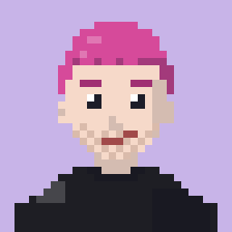
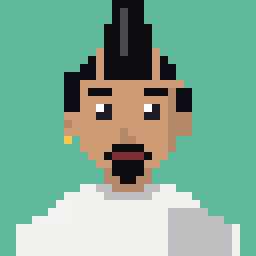
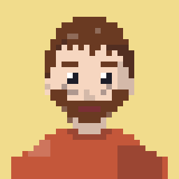
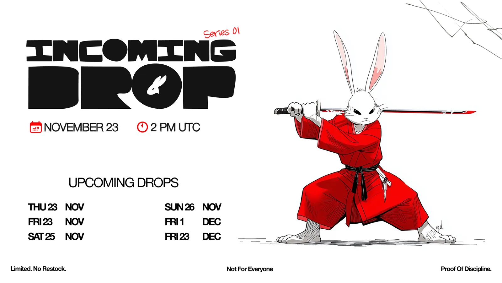
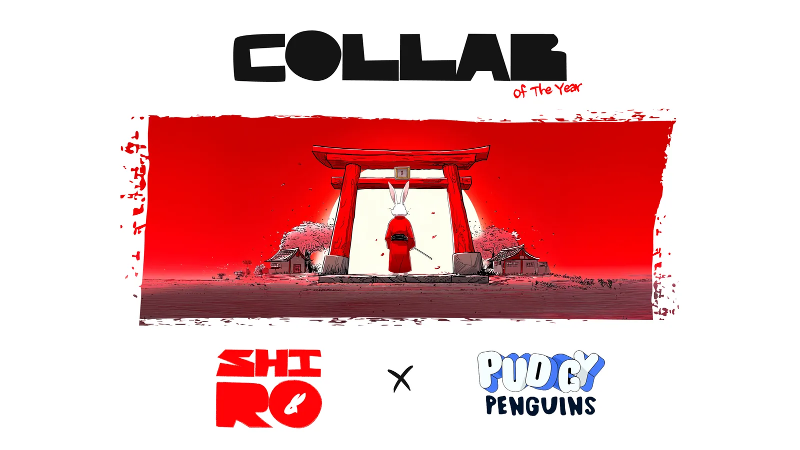
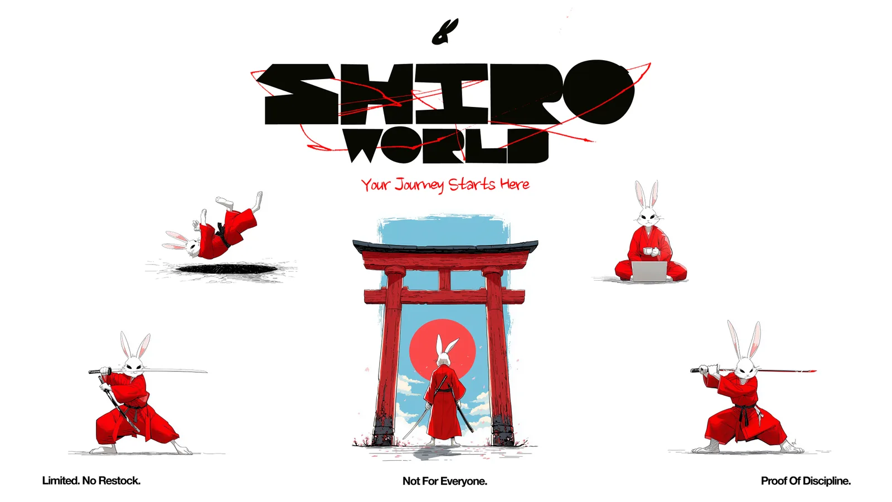
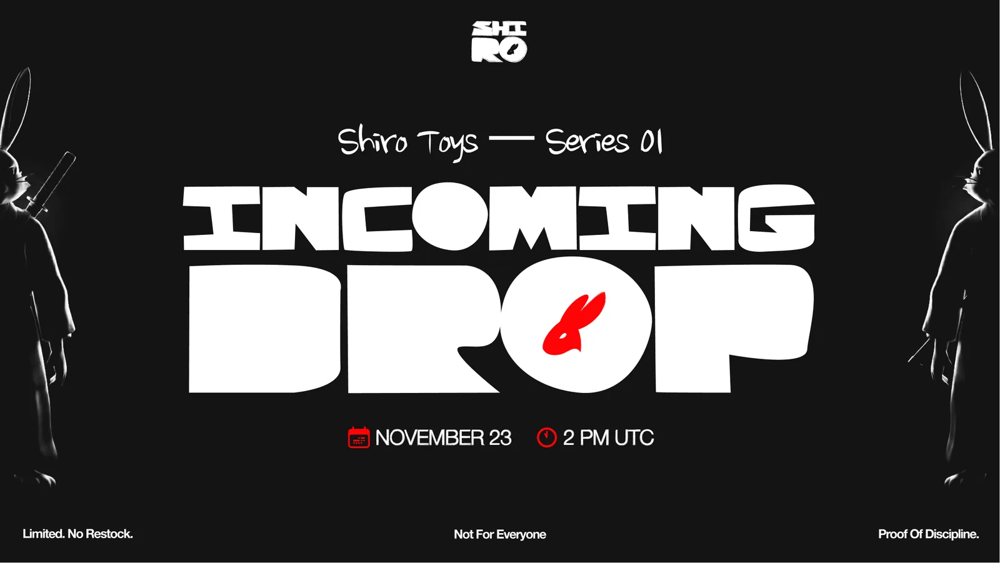

SHIRO
AI character and visual identity for social media. Created as part of my work at Cryptorsy Ventures. AI‑персонаж и визуальная айдентика для соцсетей. Создан в рамках работы в Cryptorsy Ventures.



Develop a character as the foundation for an original IP and create a visual identity for social media content. Разработать персонажа как основу оригинального IP и создать визуальную айдентику для контента в соцсетях.

Turn-Around SheetTurnaround: развороты персонажа
Shiro was brought to life using AI tools — Midjourney and Nano Banana Pro. Four angles lock in the silhouette, proportions, and outfit for consistent use across every format. Shiro оживили с помощью AI‑инструментов — Midjourney и Nano Banana Pro. Четыре ракурса фиксируют силуэт, пропорции и костюм для единообразного использования во всех форматах.

Outfit ExplorationПроработка образов
The concept included a series of short videos, so each outfit was designed for a specific mood or scenario — streetwear, casual, stealth, sport. Концепт включал серию коротких видео, поэтому каждый образ проектировался под конкретное настроение или сценарий — стритвир, кэжуал, стелс, спорт.


Logo DesignДизайн логотипа
The word SHIRO became the logo itself — the letter “O” is replaced with a circle featuring the rabbit’s silhouette. The typeface is deliberately rough, as if hand-drawn. It adds character and nods to Japanese calligraphy. Слово SHIRO само стало логотипом — буква «O» заменена на круг с силуэтом зайца. Шрифт намеренно грубый, будто нарисован от руки — добавляет характер и отсылает к японской каллиграфии.

Social Media BannersБаннеры для соцсетей
A set of banners for key content moments — drops, collabs, worldbuilding. Набор баннеров под ключевые моменты контента — дропы, коллабы, ворлдбилдинг.




Signature ClipsФирменные ролики
Created with Midjourney, Nano Banana Pro, Kling AI and Veo. Создано с помощью Midjourney, Nano Banana Pro, Kling AI и Veo.